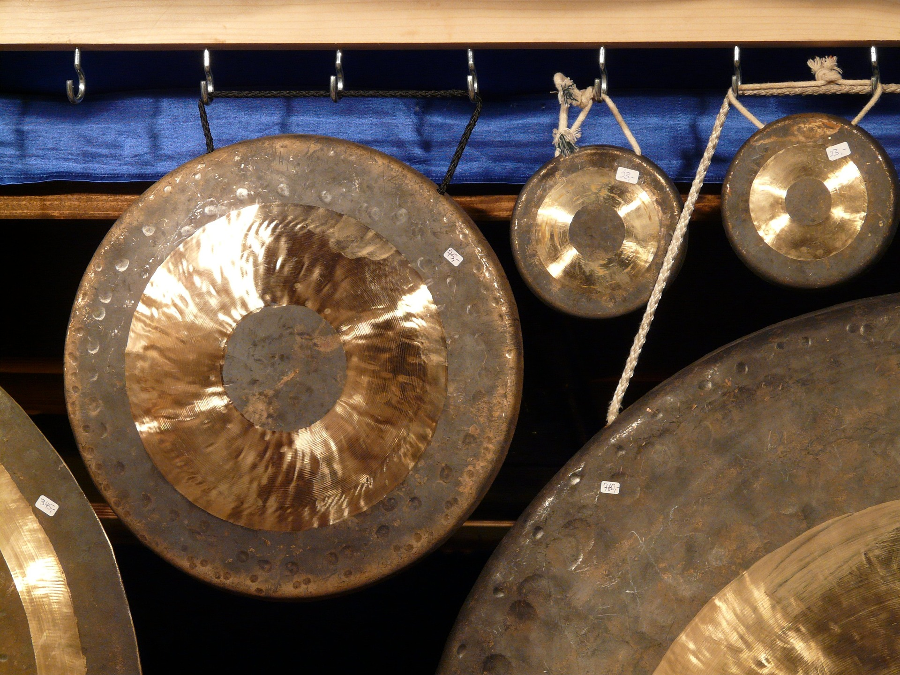
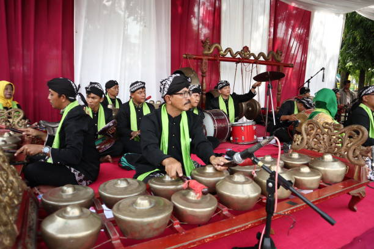

Gongs
Gongs are classified as struck idiophones. They make sound by being hit with a mallet where sound then vibrates off the body of the instrument. Gongs are typically hung up and suspended with ropes to make longer and more impactful sounds.

Classical Applications
Gongs allow for more diverse resonance in sound from other percussion. They serve as a way to allow for dramatic accents that complement other instruments' melody.

Famous Piece
The song Tokyo Drift by the Teriyaki Boyz features a gamelan throughout the piece. It is most notable in the opening to the song.
Fun Fact!
Gongs were historically used for announcements in imperial China. They would be placed in the center of towns and used when a degree came from the government.